Le carnet de champ est le cœur d'Appi'Field : c'est votre registre. Il est organisé par culture. Une culture, c'est ce que vous avez semé ou planté sur une ou plusieurs parcelles pour une saison (« Froment d'hiver Chevignon sur le Champ du Moulin et la Grande Pièce »). Chaque traitement et chaque travail au champ est ensuite rattaché à une culture et à une parcelle.
Pourquoi passer par les cultures ?
Le registre doit indiquer, pour chaque traitement, la culture traitée avec son nom officiel Phytoweb (ex. « Froment d'hiver »). C'est ce nom qui permet à Appi'Field de vous proposer les doses autorisées et de vous prévenir si un produit n'est pas autorisé sur la culture.
Pour les producteurs wallons, la variété et le précédent cultural doivent aussi figurer dans le registre : vous les indiquez une fois, dans la culture.
Une parcelle sans culture ne peut pas recevoir de traitement : créez d'abord la culture.
Une culture par saisonCréez une nouvelle culture à chaque nouveau semis, même si c'est la même espèce que l'an passé. Quand la saison est finie, archivez l'ancienne culture : votre carnet reste clair, et l'historique est conservé.
La page « Mon carnet de champ »
Cliquez sur Carnet de champ dans le menu (sur smartphone : Carnet dans la barre du bas).
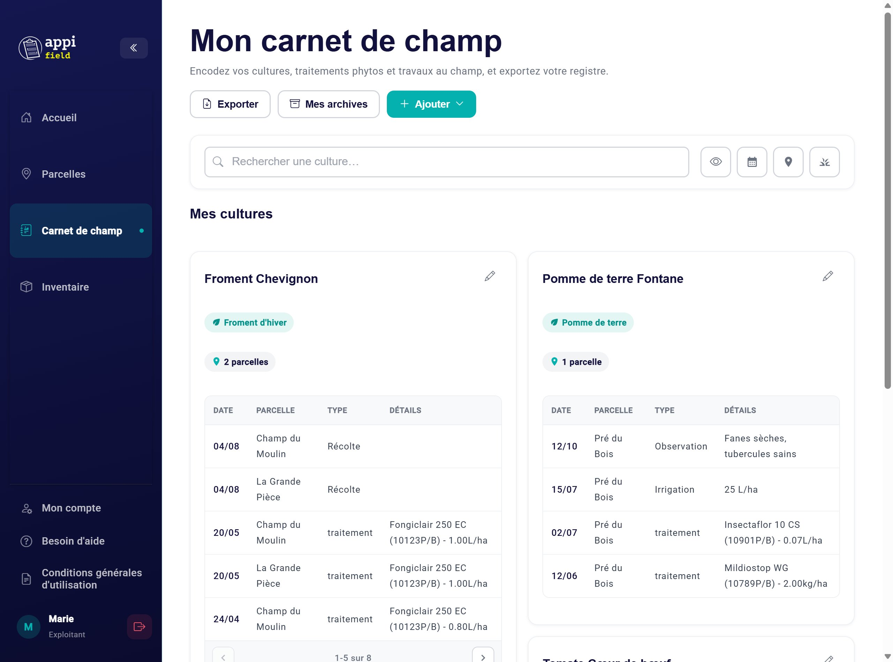
Le carnet de champ : une carte par culture, avec ses dernières interventions.
En haut de la page
Exporter : produire votre registre en Excel ou PDF (chapitre 10).
Mes archives : vos cultures archivées (chapitre 10).
Ajouter : une culture, un travail au champ (chapitre 9) ou un traitement phyto (chapitre 8).
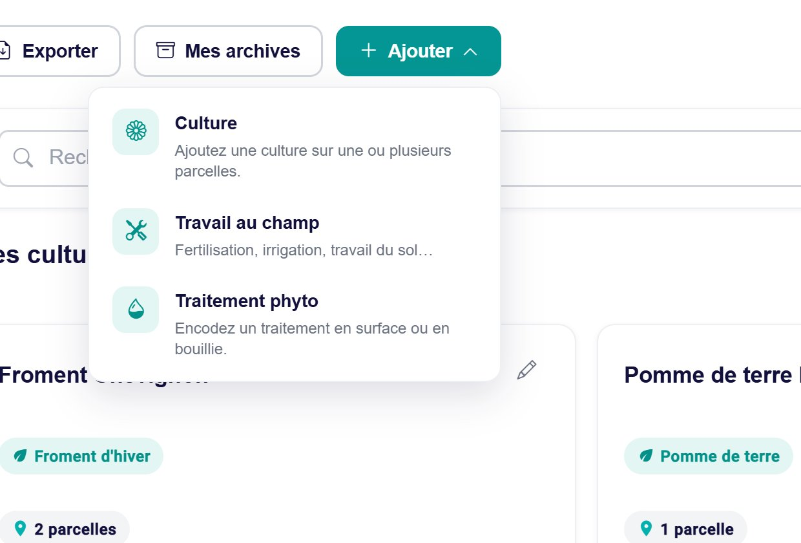
Le menu « Ajouter ».
Chaque culture
Chaque culture est présentée dans une carte :
son nom (espèce et variété) et, en vert, sa catégorie Phytoweb ;
le nombre de parcelles : cliquez dessus pour voir leurs noms ;
un tableau de ses interventions (traitements et travaux), de la plus récente à la plus ancienne : date, parcelle, type et détails (produit, numéro d'autorisation et dose pour un traitement). Le tableau en affiche 5 à la fois ; les flèches en bas montrent les suivantes ;
le crayon en haut à droite modifie la culture.
Cliquez sur la carte d'une culture pour ouvrir sa fiche complète (voir plus loin).
Rechercher et filtrer
La barre sous les boutons permet de ne garder que ce qui vous intéresse. Les quatre petits boutons à droite (sur smartphone, ils portent leur nom) ouvrent chacun un filtre :
Outil
Ce qu'il fait
Rechercher une culture…
Tapez une partie du nom d'une culture ou d'une parcelle.
👁 Vue
Passe de la vue par cultures (les cartes) à la vue globale (un seul tableau de tous les événements), et inversement.
📅 Dates
N'affiche que les interventions entre deux dates (« Du » / « Au »). Effacer retire le filtre, Appliquer ferme la fenêtre.
📍 Parcelles
N'affiche que les cultures des parcelles cochées. Tout / Aucun cochent ou décochent toutes les parcelles.
🌱 Cultures
N'affiche que certaines catégories Phytoweb (ex. seulement le froment d'hiver).
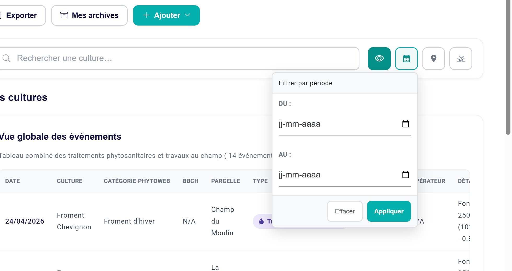
Le filtre par dates.
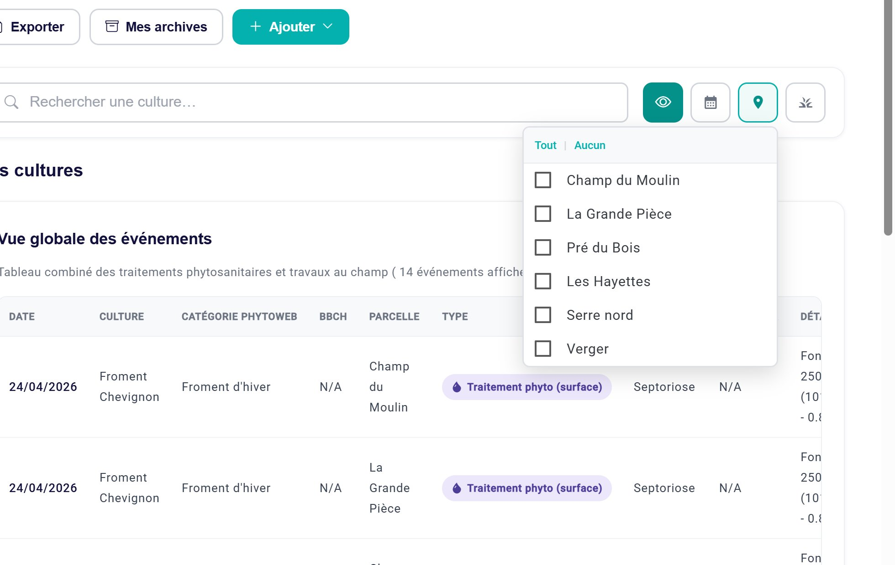
Le filtre par parcelles.
Quand un filtre est actif, son bouton est mis en couleur. Pensez à l'enlever si une culture semble avoir disparu.
Le filtre par dates cache les cultures sans interventionAvec un filtre de dates, une culture qui n'a aucune intervention dans la période n'apparaît plus du tout (par exemple une culture que vous venez de créer). Effacez le filtre pour la retrouver.
La vue globale
La vue globale rassemble dans un seul tableau tous les traitements et travaux, toutes cultures confondues : date, culture, catégorie Phytoweb, stade BBCH, parcelle, type, cible, opérateur et détails. C'est la vue la plus proche de votre registre. Le crayon au bout d'une ligne ouvre l'intervention pour la modifier, et Actualiser recharge le tableau.
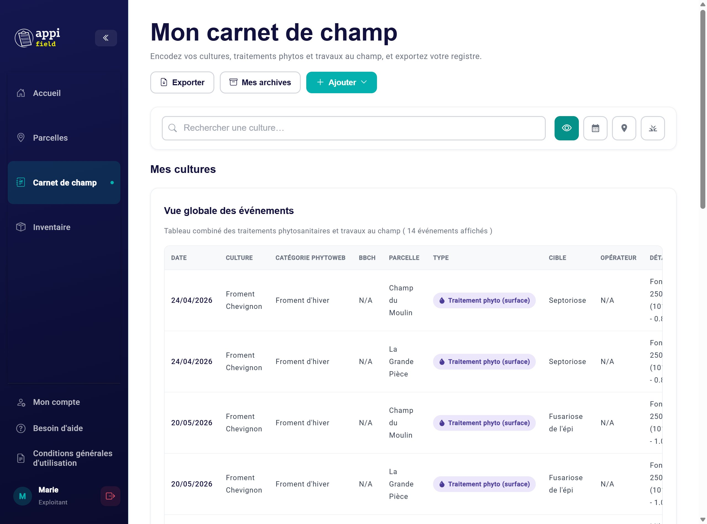
La vue globale des événements.
Un carnet vide ?
Tant qu'aucune culture n'existe, la page affiche « Aucune culture n'a été détectée » et deux boutons :
Encoder mes parcelles si vous n'avez pas encore de parcelles (chapitre 5) ;
Créer ma première culture sinon.
Créer une culture
Ajouter › Culture. Le formulaire comporte 3 étapes ; la barre en haut montre où vous en êtes. Valider passe à l'étape suivante, Précédent revient en arrière sans rien perdre.
Étape 1 : Informations
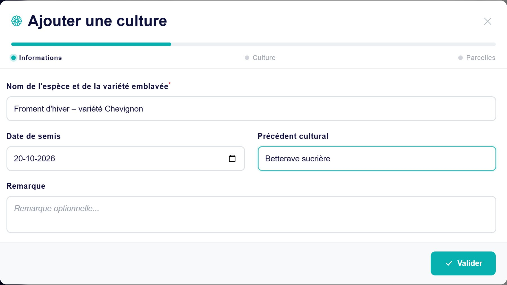
Champ
Ce qu'il faut mettre
Nom de l'espèce et de la variété emblavée*
Le nom que vous donnez à la culture, avec la variété si vous la connaissez (ex. « Froment d'hiver – Chevignon », « Pomme de terre Fontane »). Il apparaît dans le carnet et le registre.
Date de semis
Facultative mais conseillée. Elle sert aussi à nommer automatiquement la collection de la culture (l'année du semis), utile pour l'archivage.
Précédent cultural
La culture qui occupait la parcelle avant (ex. « Betterave sucrière »). À indiquer si la parcelle est en rotation.
Remarque
Toute information utile, facultative.
Seul le nom est obligatoire : tant qu'il est vide, Valider reste inactif.
Étape 2 : Culture (catégorie Phytoweb)
Tapez au moins 3 lettres du nom de la culture dans « Chercher une catégorie Phytoweb » (ex. « fro » pour froment).
Cliquez sur la bonne catégorie : elle se coche.
Cliquez sur Valider.
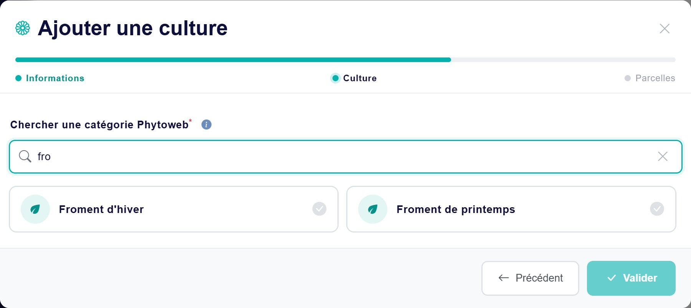
Les catégories Phytoweb contenant « fro ».
Avant de taper, Appi'Field propose les catégories que vous avez récemment utilisées : un clic suffit.
Choisissez la catégorie la plus précise : « Froment d'hiver » plutôt que « Céréales ». C'est elle qui détermine les produits et doses autorisés.
Je ne trouve pas ma cultureCherchez avec un seul mot (« pomme », « chou », « fraise »). Certaines cultures sont classées dans une catégorie plus générale sur Phytoweb. En cas de doute, consultez le site fytoweb.be, ou l'étiquette du produit, qui indique les cultures autorisées.
Étape 3 : Parcelles
Cochez la ou les parcelles où la culture est semée. Le nombre de parcelles sélectionnées s'affiche en haut à droite. La recherche permet de retrouver une parcelle par son nom.
Cliquez sur Valider.
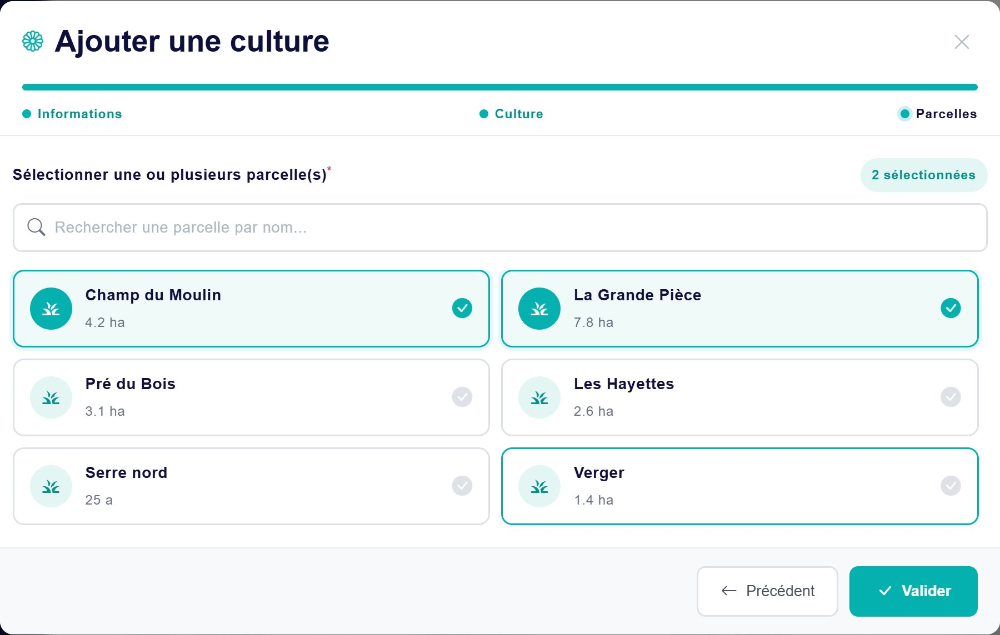
Deux parcelles sélectionnées.
Le message « Nouvelle culture créée ! » confirme l'enregistrement ; Retourner au registre vous ramène au carnet, où la nouvelle culture apparaît.
Une même parcelle, plusieurs cultures ?C'est possible, par exemple en maraîchage. Au moment d'encoder un traitement, vous choisirez alors le couple « parcelle + culture » traité.
La fiche d'une culture
Cliquez sur la carte d'une culture : sa fiche s'ouvre.
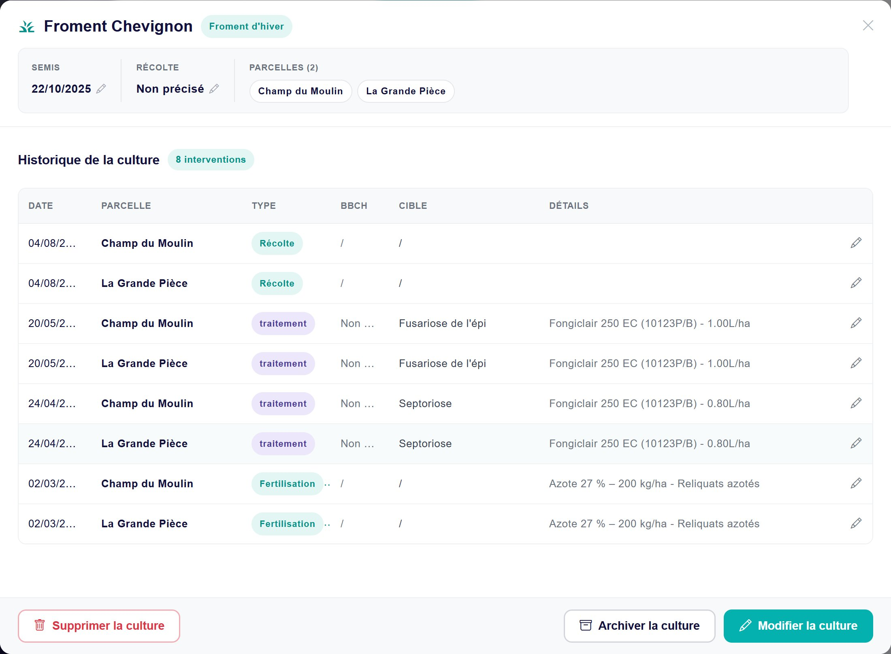
La fiche de la culture « Froment Chevignon ».
En haut
Le nom de la culture et sa catégorie Phytoweb.
Semis et Récolte : cliquez sur le petit crayon à côté de la date pour la changer directement, puis sur la coche pour enregistrer (ou la croix pour annuler). Pensez à indiquer la date de récolte en fin de saison.
Les parcelles de la culture.
L'historique de la culture
Toutes les interventions de la culture, avec la date, la parcelle, le type (traitement, récolte, fertilisation…), le stade BBCH, la cible et les détails. Le crayon au bout d'une ligne ouvre l'intervention pour la modifier (chapitres 8 et 9).
Les boutons du bas
Bouton
Ce qu'il fait
Modifier la culture
Rouvre le formulaire en 3 étapes, déjà rempli : changez le nom, les dates, la catégorie Phytoweb ou les parcelles, puis validez chaque étape.
Archiver la culture
Range la culture dans vos archives, avec tout son historique (voir ci-dessous).
Supprimer la culture
Supprime la culture définitivement, après confirmation.
Archiver une culture
Quand une culture est terminée (récoltée, saison passée), archivez-la :
Dans sa fiche : Archiver la culture.
Choisissez une collection dans la liste (les collections existantes, souvent l'année du semis), ou + Créer une nouvelle collection et tapez son nom (ex. « Récolte 2026 »).
Cliquez sur Archiver.
La culture quitte le carnet et rejoint Mes archives (chapitre 10). Elle reste dans vos exports si vous choisissez d'y inclure les cultures archivées.
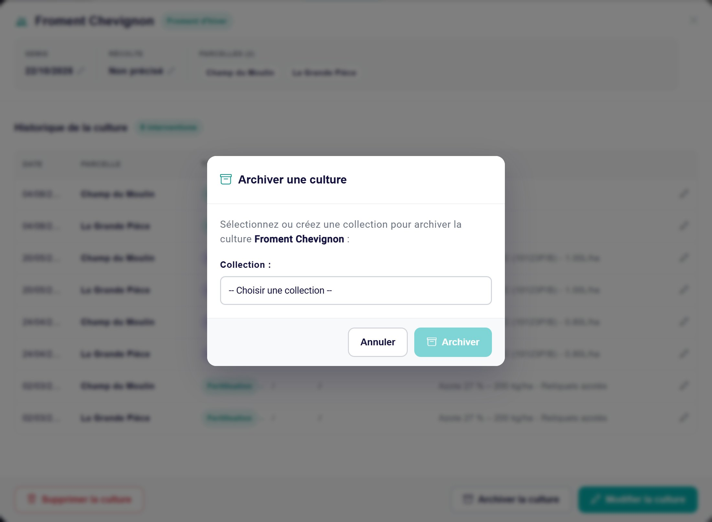
Une culture archivée est figéeElle ne peut plus être modifiée ni recevoir de traitement. Pour cela, restaurez-la depuis Mes archives.
Supprimer une culture
Préférez l'archivageLa suppression est définitive. Le message de confirmation annonce que les traitements et travaux associés seront aussi supprimés, mais en réalité ils restent dans votre registre, sans plus être visibles dans aucune culture. Supprimez seulement une culture créée par erreur, sans aucune intervention ; pour une culture terminée, utilisez Archiver la culture.
Sur smartphone
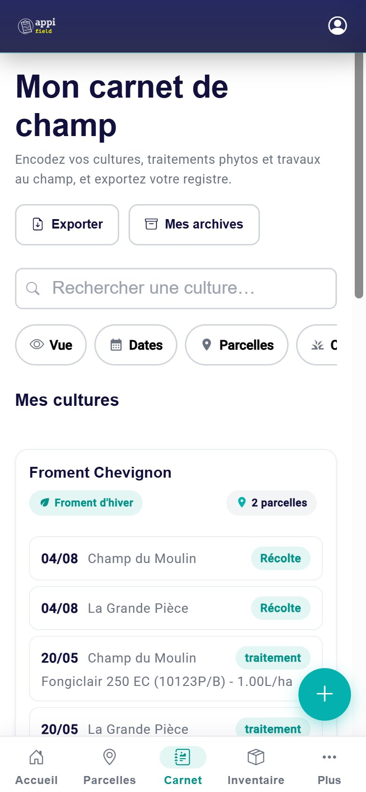
Le carnet sur smartphone.
Les filtres affichent leur nom (Vue, Dates, Parcelles, Cultures) et s'ouvrent en panneau depuis le bas de l'écran.
Le bouton rond + en bas à droite ouvre le menu « Ajouter ».
Dans les cartes et dans la fiche, les interventions s'affichent en liste plutôt qu'en tableau : une ligne par intervention, avec son type en pastille.
La fiche d'une culture s'ouvre en panneau plein écran ; les boutons Modifier, Archiver et Supprimer sont en bas.
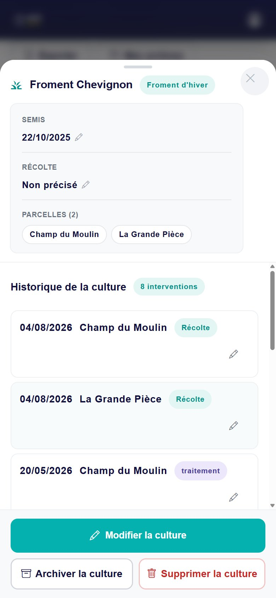
La fiche d'une culture.
Questions fréquentes sur les cultures
Une culture a disparu du carnet.
Vérifiez d'abord les filtres (un bouton coloré = filtre actif) et la recherche. Elle a peut-être été archivée (Mes archives). Vérifiez aussi l'exploitation active, en haut du menu.
Je ne vois pas ma parcelle à l'étape « Parcelles ».
Elle n'existe pas encore : créez-la dans la page Parcelles (chapitre 5), puis recommencez.
Je me suis trompé de catégorie Phytoweb.
Ouvrez la fiche, Modifier la culture, et choisissez la bonne catégorie à l'étape 2.
Ma culture couvre une nouvelle parcelle.
Modifier la culture, puis cochez la parcelle à l'étape 3.
Faut-il recréer la culture chaque année ?
Oui : une culture correspond à un semis. Archivez l'ancienne et créez la nouvelle, avec son précédent cultural.